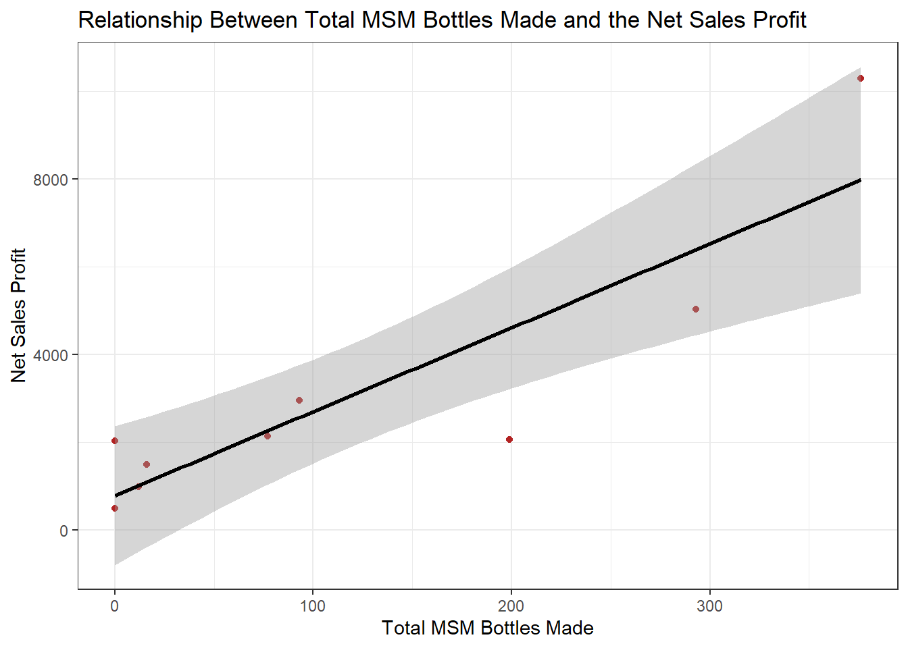
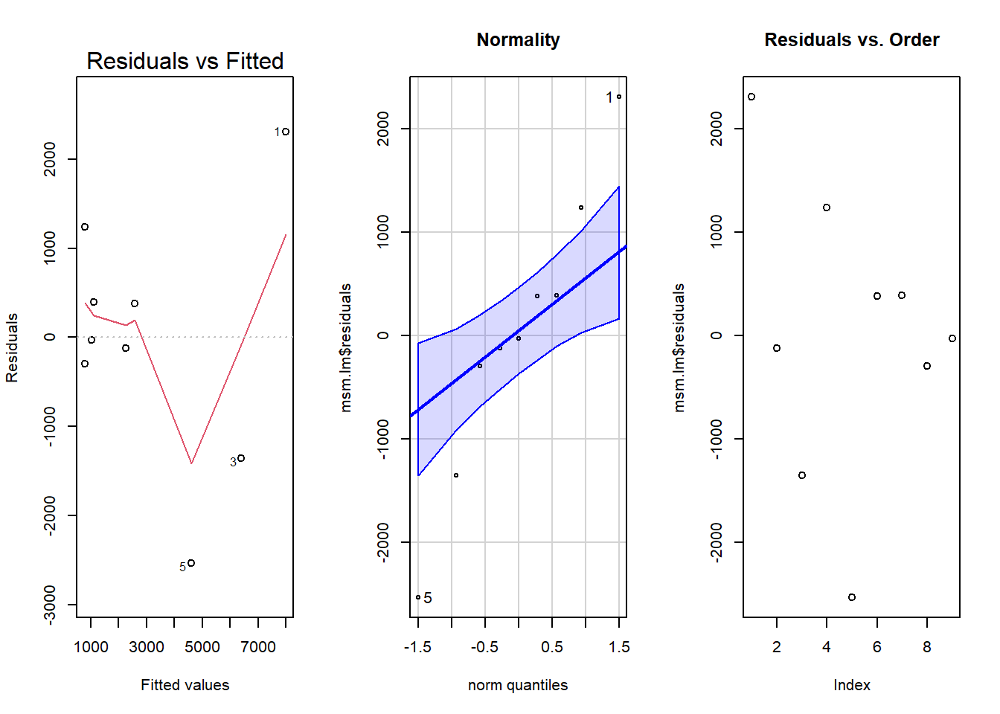

library(mosaic)
library(ResourceSelection)
library(DT)
library(pander)
library(car)
library(tidyverse)
msm <- read_csv("Rich Distributing Quantity and Hours.csv")Rich Distributing Consulting Project
Background
Rich Distributing is a subset of the first-aid company Shield-Safety, which focuses on selling products made with a supplement called MSM(Methylsulfonylmethane). It helps with a variety of problems, such as arthritis, ulcers, high blood pressure, high cholesterol, etc.
For more information on MSM check out the WebMD article about it: https://www.webmd.com/vitamins-and-supplements/msm-methylsulfonylmethane-uses-and-risks
While Rich Distributing sells many different products that use MSM, one of the main ones they produce is MSM tablets, currently sold in 3 sizes of bottle: 175, 250, and 500. At the moment, they have one machine that they use to make the tablets, which poses a few problems. Namely, some tablets are not sturdy enough and must be weeded out, which lowers the amount of production, and if the machine breaks, production is completely halted for a time until it can be fixed. Therefore, the company is considering buying a second tablet machine. However, a new machine costs around $1900.
For this analysis, I will compare the amount of tablets made each month to how much the company makes in sales, in order to see if there is a significant relationship between them. If there is, buying a new machine may be worth the high cost.
Questions and Hypotheses
Does the amount of tablets made in a month, have a linear relationship with the money made in sales each month?
Linear Regression Model:
\[ Y_i = \beta_0 + \beta_1 X_i + \epsilon_i \] Slope Hypotheses:
\[ \beta_1 = 0 \] \[ \beta_1 \ne 0 \] Level of Significance:
\[ \alpha = 0.05 \]
Data Wrangling
First, I used the data I received for how many of each type of bottle was made and sold and combined the types into two new columns: total_made and total_sold. I also made a new column called net_sales, taking the total sales and subtracting the amount paid to the person making the tablets.
#filter
comb_msm <- msm %>%
mutate(total_sold = MSM175_sold + MSM500_sold + MSM250_sold,
total_made = MSM175_made + MSM500_made + MSM250_made,
net_sales = sales - paid_amount)
view(comb_msm)Below is a table showing all of the information from the original data, plus the new columns.
datatable(comb_msm)Graphical and Numerical Summaries
#scatterplot
ggplot(comb_msm, aes(x = total_made, y = net_sales)) +
geom_point(col = "firebrick", pch = 16) +
geom_smooth(method = "lm", col = "black") +
labs(
title = "Relationship Between Total MSM Bottles Made and the Net Sales Profit",
x = "Total MSM Bottles Made",
y = "Net Sales Profit"
) +
theme_bw()
Looking at this scatterplot, there seems to be a fairly strong positive linear relationship between the amount of tablets made and how much is made in MSM sales.
The correlation coefficient below, shows how strong that relationship is:
#correlation coefficient
pander(cor(net_sales ~ total_made, data = comb_msm))0.8864
The correlation coefficient confirms and supports what we can see in the scatterplot with a value of 0.8864, which represents a strong positive relationship between the two variables.
Linear Regression Analysis
msm.lm <- lm(net_sales ~ total_made, data = comb_msm)
pander(summary(msm.lm))| Estimate | Std. Error | t value | Pr(>|t|) | |
|---|---|---|---|---|
| (Intercept) | 790.9 | 668.2 | 1.184 | 0.2752 |
| total_made | 19.13 | 3.776 | 5.067 | 0.001452 |
| Observations | Residual Std. Error | \(R^2\) | Adjusted \(R^2\) |
|---|---|---|---|
| 9 | 1489 | 0.7857 | 0.7551 |
Next, I did a linear model test on the total bottles made and the net sales profit, to see if the linear relationship is significant enough to say that the slope of the model is not equal to 0. I found the p-value for the slope (0.001452) to be less than the level of significance (0.05), therefore I reject the null hypothesis. I have sufficient evidence to suggest that the number of MSM bottles made has a significant effect on the total money made in sales.
Intercept and Slope Interpretation
The fitted linear model, using the values for intercept and slope found in the above test, is: \[ Y_\text{net_sales} = 790.9 + 19.13 X_\text{num_bottles} + \epsilon_i \] 790.9 represents the intercept. This means that when 0 bottles are made, the net sales is approximately $790.90.
19.13 represents the slope. This means that for every one bottle made, the net sales goes up by $19.13, on average.
Prediction with Second Machine
Average number of bottles made per month:
pander(mean(comb_msm$total_made))118.4
Average net sales per month:
pander(mean(comb_msm$net_sales))3057
The average number of MSM bottles being made every month is 118.4 and the average profit in sales is $3057. Buying a second machine would increase the number of bottles made, so for this analysis I will predict how much the profit would increase if 1.5 times more bottles were made each month, using the fitted linear model from above.
\[ 790.9 + 19.13 * (1.5 * 118.4) = 4188.388 \]
Through the linear model, I found that the average monthly sales profit would be $4188.39. Therefore, I predict that buying a second tablet machine would increase profits by approximately $1131, on average, every month.
Appropriateness of the Model
par(mfrow = c(1,3))
plot(msm.lm, which = 1)
qqPlot(msm.lm$residuals, main = "Normality")[1] 5 1plot(msm.lm$residuals, main = "Residuals vs. Order")
The three above graphs help me to see whether the linear model is appropriate and fits the data. There do seem to be a few outliers in the Residuals vs. Fitted plot, causing the red line to go down and making the data not quite linear. In the Normality plot, although most points are within the blue, making them normal, the outside points are making a slightly different shape from a straight line, which suggests that there may be a different pattern than the one tested for in this analysis. However, the Residuals vs. Order plot shows that the points are independent.
Although some of the requirements for the linear model test were not met, I found this to be the best way to interpret the data, at this time.
Conclusion/Action Items
In conclusion, I found that there is a strong positive relationship between the amount of MSM tablets made and the total profit in sales. Although more analyses on data from over a longer period of time may be helpful in confirming the results of this analysis, I still suggest that buying a new machine will increase both productivity and profit for Rich Distributing.
By buying a second tablet machine, the number of bottles made each month will increase, and therefore the money made in sales will also increase. My prediction in this analysis showed that sales could increase each month by around $1131 with a second machine, and since the machine costs around 1900 dollars, it will pay for itself after less than 2 months! Alongside this, having a second machine will also help to ensure that production does not stop if one of the machines breaks. Therefore, the benefits of the machine is worth the cost.